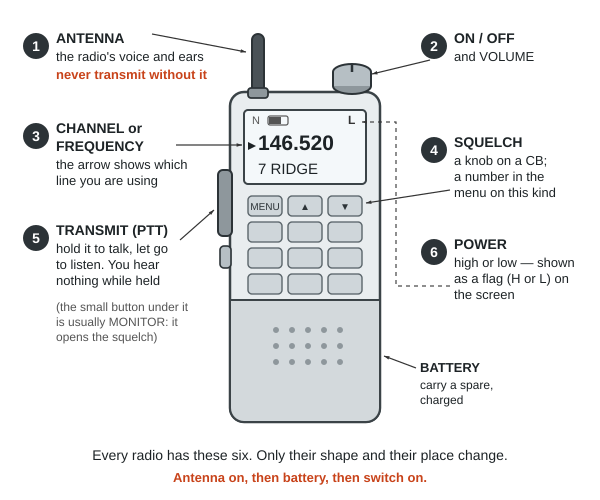
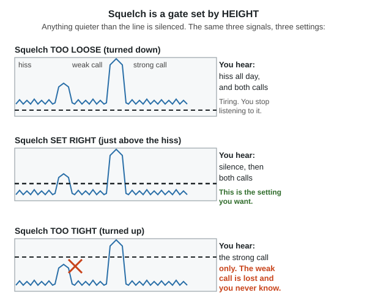
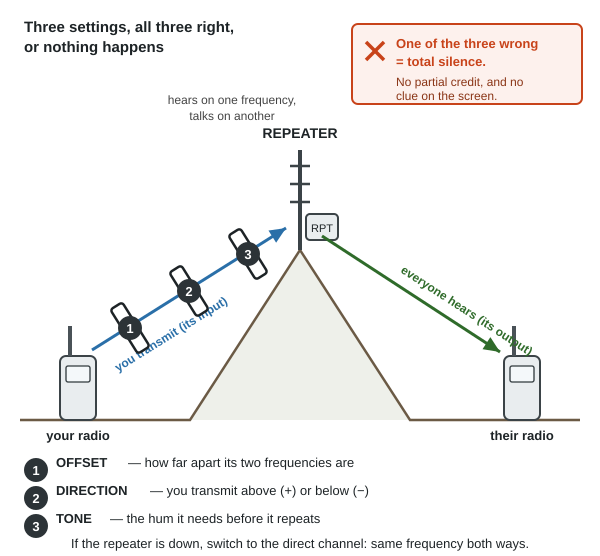
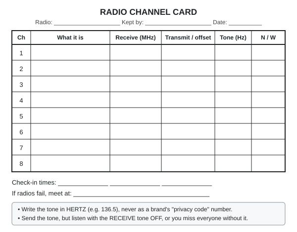

Guides › Radio, community & protection · Emergency · Index A–Z
A radio nobody can work is no better than no radio. This guide is about the equipment: which knob does what, how to put a channel in, what squelch is, what a "privacy code" really does, how to work a repeater, and how to fill a radio with channels from a computer while there is still internet. It assumes you have never used a radio.
The rest is in two other guides: which service to use, licences, antennas, range and how to call for help in the Emergency radio guide; texting radio to radio in the Mesh radio guide.
The books behind it are in Southern-Oregon\Comms-Signals\Radio-Operating: the federal fire crews' own radio course (NIRSC training), the DHS field guide with its tone tables, and the FCC's rules (Part 95, Part 97); the Army's FM 24-18 is in Southern-Oregon\Electronics-Repair\. Button-by-button detail is in no book here; those lines say (rule of thumb).
The short version
- Antenna on before you ever press transmit. "Never operate the transmitter without the antenna attached" (FM 24-18, p. 111).
- Every radio has the same six controls: on/off and volume, squelch, channel or frequency, the transmit button, power level, and the antenna.
- Squelch is the hiss gate. Too tight and you hear nothing — including the weak call you were waiting for (NIRSC, p. 24).
- A "privacy code" makes nothing private. It only keeps your own speaker quiet.
- Do the computer part now, while there is internet: the free CHIRP program, a cable you have tested, your channels in every radio, and a printed card.
- Save your own radio's manual onto the drive. Models differ, and no general guide can give you your radio's menu numbers.
A $25 handheld, a ham base station, a truck CB and a weather radio all have the same six things. Makers hide them in different places, but there are only six.
| Control | What it does | What goes wrong |
|---|---|---|
| On/off and volume | Power, and how loud the speaker is | Volume set in silence, so you can't tell it is working |
| Squelch | Cuts the hiss when nobody is talking | Too tight: silence, even when someone calls. Too loose: hiss all day |
| Channel or frequency | Which conversation you are on | Both radios must be on the same one, set the same way |
| Transmit (the PTT) | Hold to talk, let go to listen | You are deaf while you hold it; the first word is often cut off |
| Power: high or low | How hard it shouts | High power on a weak battery; low power when you need range |
| The antenna | The radio's voice and its ears | Transmitting with none on, a loose connector, holding it flat |

The six controls, drawn generically: every radio has these, wherever the maker put them (a diagram drawn for this guide).Switch on with the antenna already fitted. Set the volume against noise, not silence: open the squelch until you hear hiss, set the volume on that hiss, then close the squelch again (NIRSC, p. 25). A radio set in silence is usually far too quiet, and you find out when a call goes unheard. For a weak signal an earphone beats the speaker (FM 24-18, p. 112) — keep one with the radio.
A receiver with nothing to receive is at its most sensitive, so it amplifies the hiss of empty air and "you will hear noise greatly amplified" (NEETS 17, p. 72). Squelch is a gate that keeps the speaker shut until a signal worth hearing arrives. Open it (turn it down) and you get hiss and every faint signal; close it (turn it up) and the hiss goes — but "if adjusted too tightly, valid signals may not be strong enough to open the squelch" (NIRSC, p. 24).
On a cheap handheld the squelch is a number in the menu, 0 (wide open) to 9 (tightest); the middle suits most places (rule of thumb). On a CB it is a knob.

Squelch is a gate set by height: anything quieter than the line is silenced. Set it just above the hiss and no higher (a diagram drawn for this guide).Two radios hear each other only if they are "powered on and operating on the same channel" (NIRSC, p. 37). A channel is a number somebody already attached to a frequency — CB channel 19, FRS channel 3, memory channel 7 on your handheld — and is easy to say on the air and write on a card. A frequency is the number itself: FRS channel 3 is 462.6125 MHz (§95.577).
Many radios have two modes: frequency mode, where you type numbers, and channel (memory) mode, where you turn through what you saved. In memory mode you usually cannot type a frequency at all — the commonest "my radio is broken" moment (rule of thumb). Matching also means tone (section 3) and bandwidth (section 2).
PTT means push-to-talk: hold it to talk, let go to listen. One person talks at a time, and you hear nothing while you hold it. The fire crews' drill works on any radio (NIRSC, p. 40):
Plain English, not ten-codes (same page). Distress calls and message forms are in the Radio guide.
Low power saves the battery and still works close by; high power is for reaching out. "The range of a transmitter is proportional to the power radiated by its antenna" (FM 24-18, p. 105), but height beats watts (Radio guide). The FCC's rule for the licence-free radios is to use the least power that does the job, except that for emergency messages you may use "the highest transmitting power available" (§95.367).
⚠️ Never turn power down by mistuning the radio: "operation with a detuned power output stage can cause damage to the transmitter" (FM 24-18, p. 105).
The $25 dual-band handheld — the Baofeng UV-5R and its many look-alikes — is the radio most people own. It covers the 2 metre and 70 cm ham bands and will tune across the FRS, GMRS, MURS and public-service frequencies too; read the law before transmitting on any of them.
⚠️ Models and firmware differ, and they differ a lot. Two radios with the same picture on the box can have different menu numbers, labels and key combinations. Nothing below gives a menu number, because no general guide can. Download your own radio's manual while there is internet, copy it onto the drive beside these guides, and print the menu list: "study the technical manuals for the equipment you are using" (FM 24-18, p. 113).
What you are looking at. Two lines on the display, because these radios watch two channels at once, with a small arrow showing which line the keys and the transmit button are using — the arrow being on the other line is behind nearly every "it won't transmit" (rule of thumb). A frequency means frequency mode; a channel number and name means memory mode. Small flags round the edge show the padlock, the battery, high or low power, N for narrow, and the tone setting. The keys are a menu key, arrows, an exit key, a keypad, a key that swaps the two lines and a key that switches frequency and memory mode. On the side is the long transmit bar with a monitor button under it; on top the antenna, the volume and on/off knob, and an earphone socket.
The menu. Press the menu key for a numbered list; arrows move, menu goes in and accepts, exit backs out. The names are short and cryptic, so what matters is knowing what each one is — your manual gives the numbers.
| Look for | What it is | Usually |
|---|---|---|
| Squelch level (often "SQL") | How tight the hiss gate is | Middle of the range (rule of thumb) |
| Transmit power (often "TXP") | High / low | Low near home, high to reach out |
| Bandwidth ("W/N", wide/narrow) | How much room the voice takes | Must match the other radio |
| Receive tone (an "R-" item) | Tone that must arrive before your speaker opens | Off |
| Transmit tone (a "T-" item) | Tone you send | Only when a repeater or group needs one |
| Offset size and direction | Repeater working (section 4) | 0 and direct |
| Memory save / store | Saves what you have set as a channel number | See below |
| Dual watch / dual standby | Watch both lines at once | On, unless the battery is short |
| Roger beep · voice prompt · key beeps | Noises | Off, once you have learned the radio |
| Busy channel lockout | Refuses to transmit over someone else | On, outside an emergency |
Locking the keypad. A radio in a pocket reprograms itself. Nearly all of these lock when you press and hold one key (often the one marked with a padlock or #), and the same press unlocks it; if the radio beeps and shows "locked", that is what happened (NIRSC, p. 33). Lock it whenever you carry it.
Putting a frequency in by hand. Get into frequency mode; check the arrow is on the line you want; type every digit with no decimal point (146.520 is 146520); set power, bandwidth and any tone; then listen before you ever press transmit. If the radio refuses the number, it is outside the band the radio was built for, or you are in memory mode. Nothing is broken.
Memory channels. A memory holds a frequency, its tone, its width, its power and a name, so you reach it with one knob in the dark instead of typing nine digits. Fill them now, with names you will understand in a panic — HOUSE, RIDGE, WX1, not CH7 (rule of thumb). Saving one is the fiddliest thing these radios do and your manual has the steps: on most you set everything up in frequency mode, then use the menu's save item, choose a channel number and accept. Check it afterwards in memory mode. It is far easier from a computer (section 5), and easiest of all is copying a radio that is already set up, as fire crews do — "better still, have your radio 'cloned' from a radio that has already been programmed" (NIRSC, p. 9).
Narrow or wide. Voice channels come in two widths: FRS is 12.5 kHz, narrow (§95.573), while the main GMRS channels are 20 kHz, wide (§95.1773); radio plans write N or W beside every frequency (ICS 205 instructions, p. 23) and above 138 MHz narrow is now the normal case (DHS field guide, p. 8). Get it wrong and the radio still works, it just sounds wrong: your voice arrives thin and quiet at a radio set wider than yours, loud and distorted at one set narrower (rule of thumb). If one person says you sound strange and nobody else does, check this.
Dual watch listens to both lines and stops on whichever speaks. It transmits on the line the arrow is on, not the one you just heard, so move the arrow before you answer; and watching extra channels "takes more power and drains batteries more quickly" (NIRSC, p. 18). The fire crews' rule is no more than three channels (p. 19).
The beeps. The roger beep is a short tone sent when you release the transmit button, which the rules allow ("brief tones to indicate the end of a transmission", §95.587); it helps on a noisy channel and irritates everywhere else. Voice prompts read the menu aloud: useful while you learn, a liability when you are hiding. Turn both off when you are done learning (rule of thumb).
Battery and charging. These charge in a drop-in cradle whose light changes colour when done; take the battery out then, and don't leave it on charge for weeks (rule of thumb). Don't charge a cold or hot battery: lithium cells should not be charged below 0 °C (32 °F) or above 45–50 °C (113–122 °F), and charging cold can wreck a cell outright (Li-ion overview, p. 7). Keep two batteries, one in the radio and one charged on the shelf (NIRSC, p. 39), and buy the AA battery tray made for your model now: they are model-specific, and a radio you can feed with any cells you find is worth having (rule of thumb).
The stock antenna is the weakest part. The short rubber antenna is made to be pocketable, not good. A longer whip, or a wire up in a tree, is the cheapest big improvement to any handheld (rule of thumb); height is what really matters (Radio guide).
A tone is a hum too low to hear — 67 to 250 hertz — sent underneath your voice the whole time you transmit (§95.377). Its one job is to open the other radio's speaker: the tones "act like a key; you need to use the correct key to activate the radio" (NIRSC, p. 22). It has a shelf of names for the same thing — CTCSS (continuous tone coded squelch system), channel guard, code guard, PL or "private line", tone squelch, and on bubble-pack walkie-talkies "privacy code" (NIRSC, p. 15; ICS 205 instructions, p. 23). DCS does the same job with a quiet digital stutter instead of a hum.
☠️ A tone is not privacy
Anyone on your frequency with no tone set on receive hears every word. The tone silences their speaker, not your transmission. It does not scramble or hide anything — for these radios the FCC will not even certify voice scrambling (§95.381). "Privacy code" is a marketing word. For a conversation nobody else can read, see the Mesh radio guide.
What tones are good for: getting into a repeater, which mostly will not repeat you at all without the right tone (NIRSC, p. 15; §95.1777); and keeping a busy channel quiet, so your radio sleeps through other people's traffic and wakes for your group (p. 22).
Setting them means two separate settings, and that is the whole trick. The transmit tone is what you send: set it to whatever the repeater or your group uses. The receive tone is what must arrive before your speaker opens: leave it off unless you really want the quiet, because with it on you are deaf to everyone without it. That is the federal guidance for shared channels — send the tone, listen with the tone off, and keep a button that can switch receive tones off (DHS field guide, p. 20). Hearing only your own group on a shared frequency is how two groups talk over each other.
Which tone? There are 32 standard CTCSS tones (67.0, 69.3, 71.9 … 203.5 Hz and a few above) and a long list of DCS codes; both tables are printed in the DHS field guide, p. 68 and p. 69. Some radios show tones in hertz, some as two-character codes like 1Z or 3A; that table has both (p. 8). A bubble-pack radio's "privacy code 1 to 38" is only a position in that list, and brands number them differently, which is why two brands both on "code 5" sometimes cannot hear each other (rule of thumb). Write the tone on your card in hertz, never as a brand's code number.
A repeater is a radio on a hilltop that hears your handheld and shouts it again from a tall antenna with real power — it "extends your line of sight" (NIRSC, p. 6). What a repeater is, and why hill country needs one, is in the Radio guide. This section is only about making your radio use one.
Three things must all be right, and nothing happens if any one is wrong:
| What it is | If it's wrong | |
|---|---|---|
| 1. Offset | How far apart the repeater's listening and talking frequencies are: you listen on its output, transmit on its input | You transmit where nobody is listening |
| 2. Direction | Whether your transmit frequency is above (+) or below (−) the one you listen on | Same: your voice lands on an empty frequency |
| 3. Tone | The sub-audible tone the repeater needs before it repeats anything | The repeater hears you and ignores you |
The two frequencies are the whole idea: a repeater "receives on one frequency and simultaneously re-broadcasts the signal on a different frequency" (NIRSC, p. 6), so a repeater channel is written as a receive frequency and a different transmit frequency (p. 7). A plain radio-to-radio channel — simplex, direct or talk-around — uses the same frequency both ways (p. 4).
On a handheld you set this one of two ways: put in the frequency you hear, then the offset size, the + or −, and the transmit tone, if the radio has those menu items; or save the repeater's output as the channel's receive frequency and its input as its transmit frequency, which is what a computer does for you and what every repeater list prints. GMRS is easy, because its offset is always the same: a GMRS repeater's input is 5 MHz above its output (DHS field guide, p. 101; the two channel lists in §95.1763 are 462 and 467 MHz). Ham repeaters use their own offsets, which your local repeater list gives.

Offset, direction and tone: all three right, or the repeater never answers. There is no partial credit (a diagram drawn for this guide).Talk-around turns a repeater channel into a direct one by using the repeater's output frequency both ways. It keeps two people standing together off the repeater, but switched on by mistake it means you cannot reach the repeater at all, and nothing on the screen says so (NIRSC, p. 34). If the repeater is down, go simplex: save the direct channel beside every repeater channel so you can switch without typing (Radio guide).
The valley's own numbers are already listed — the JCEC repeater with its offset and tone, the net times, and the no-licence Monday check-in channels — in the Radio guide's local section and on its printed card. Copy them straight onto the channel card in section 7 rather than writing them down twice, and check them against a current club list before you trust them.
Typing memory channels on a keypad takes an hour and goes wrong. A computer does it in ten minutes and leaves you a file you can copy to every radio in the house, back up and print. Do this now: it needs internet once, and never again.
CHIRP is the free program nearly everyone uses. It is free software under the GNU General Public License version 3, so it costs nothing and may be copied freely, and it comes from the project's own site, chirpmyradio.com. It runs on Windows 10 and later, macOS Big Sur and later, and Linux with Python 3, handles several hundred models including the cheap handhelds, and the project asks you to use the newest build, as that is the only one they maintain.
⚠️ CHIRP is not on this drive, and the library's download list cannot fetch it. The installer is a program, not a PDF or a ZIP, which is all the library downloads, and CHIRP's download site turns plain downloaders away. Save it by hand, now: download the installer from chirpmyradio.com and copy that file into
Southern-Oregon\Comms-Signals\Radio-Operatingbeside these books, with the date in its name. A program you did not save is a program you will not have.
The cable is a programming cable: USB at one end, the radio's own two-pin earphone-and- microphone plug at the other, with a chip inside that turns USB into the serial line the radio speaks. It is not a charging cable and not an audio cable. The usual problem is a counterfeit cable: cheap ones use copied chips, and Windows will often recognise the cable, install a driver and show a COM port — and then the program cannot talk to the radio at all, sometimes after working once (rule of thumb). Buy from the radio's maker or a known ham dealer, try another computer and a socket on the machine rather than a hub, and look up the driver version CHIRP's own site recommends. Test the cable while you still have internet.
The order of work:
The words on your screen will not match this page exactly: "there is no one-size-fits-all solution due to differing radio designs" (DHS field guide, p. 20). The order is what matters.
No computer, no cable, or no software for your radio: the keypad can still do all of it. The exact presses are in your manual; the shape of the job is always this.
Do the whole list in one sitting, in the same order as your card, and lock the keypad when you finish. If a step will not take, you are in the wrong mode, the arrow is on the other line, or the frequency is outside what the radio was built for.
Fill this in, print it, and tape a copy inside the radio's case. The Radio guide's frequency card already has the numbers that are the same everywhere — CB channel 9 and 19, the ham calling frequency, the weather-radio frequencies — so copy from it rather than writing them twice.
| Ch | What it is | Receive (MHz) | Transmit or offset | Tone (Hz) | N/W | Notes |
|---|---|---|---|---|---|---|
| 1 | House to barn, direct | 462.6125 | same | none | N | FRS ch 3, no licence, up to 2 W |
| 2 | Ham calling, direct | 146.520 | same | none | W | Listen here first; licence to talk |
| 3 | Local repeater | + offset | From the local repeater list | |||
| 4 | Weather | receive only | — | Never transmit | ||
| 5 | ||||||
| 6 | ||||||
| 7 | ||||||
| 8 |
The two worked rows are real: FRS channel 3 is 462.6125 MHz (§95.577) at up to 2 watts on channels 1–7 (§95.567) and needs no licence (§95.305); 146.520 MHz is the national 2 metre calling frequency, which needs a ham licence to transmit on.
Emergency offices use the same table. Their standard form, ICS 205, has exactly these columns — channel number, function, name, receive frequency with N or W, receive tone, transmit frequency with N or W, transmit tone (ICS 205, p. 21, instructions on p. 23) — so a filled-in ICS 205 handed to you in a real emergency tells you exactly what to put in the radio.

Print this, fill it in by hand, and keep a copy with every radio (a diagram drawn for this guide).A receiver that sits on one of the seven weather frequencies (162.400 to 162.550 MHz) and carries the National Weather Service day and night, repeating every 4 to 6 minutes (NOAA brochure, p. 2).
The weather-radio stations that reach the valley and Josephine County's SAME code are in the Radio guide's local section. Try each of them at the spot where the radio will live: NOAA warns that mountain valleys "may experience little or no reception at considerably less than 40 miles" (NOAA brochure, p. 3), and this valley is ringed by mountains. If none comes in indoors, try a window facing Medford, or an outside antenna.
Listening only, so no licence and nothing you do can be heard (Radio guide).
Forty channels at 27 MHz, no licence, a knob per function and nothing to program.
A receiver that hunts through a list of channels, stops when one is busy and carries on when it goes quiet (NIRSC, p. 18). It cannot transmit at all, and it is the best way to learn what is happening around you. It can hear anything analogue in its range: the weather frequencies (NOAA brochure, p. 3), FRS, GMRS, MURS, CB, ham, marine, aircraft and many fire and public-works channels. It cannot hear a digital system unless it was built for that system, and an encrypted channel is closed to every scanner — many agencies have moved to digital, so find out what the services near you use before buying one (rule of thumb). Keep the list short: a scanner loaded with fifty busy channels sits on the first one; three to five is a working list (p. 19).
Nothing here is legal advice, and the rules themselves are now on the drive: 47 CFR Part 95 for CB, FRS, GMRS and MURS, and Part 97 for ham.
| Problem | Try this |
|---|---|
| No sound at all | Volume up; open the squelch or hold the monitor button until you hear hiss, set the volume on the hiss, then close the squelch just past it (NIRSC, p. 25). Check no receive tone is set, which silences everyone without it (DHS field guide, p. 20) |
| Hiss and nothing else | Squelch too far open, or an empty channel. Close it until the hiss stops; check you are on the agreed channel |
| They hear me, I can't hear them | A receive tone set on your radio; narrow against wide; squelch too tight; or they are too far for your power |
| I hear them, they can't hear me | The arrow is on the other display line; power set low; antenna loose, missing or held flat; battery nearly flat — radios transmit badly long before they stop receiving (rule of thumb) |
| Nothing happens on the repeater | One of the three: offset, direction, tone (section 4). Check talk-around is not switched on, which shows nothing on the screen (NIRSC, p. 34). Then try the direct channel |
| It transmits on the wrong channel | Dual watch transmits on the line the arrow is on, not the one you heard: move the arrow (p. 18) |
| I sound odd to one person only | Bandwidth mismatch (ICS 205 instructions, p. 23) |
| First word cut off, or cut off mid-sentence | Press, pause, then speak; and unkey every minute or two, say "break", carry on (NIRSC, pp. 40–41) |
| Short battery life | Scanning or dual watch on too many channels, high power, the backlight and the beeps. Scan no more than three channels (p. 19) |
| Buzz, hum or constant chatter | Power lines or fluorescent lights opening the squelch (p. 24); move away from your generator and charger (FM 24-18, p. 103) |
| The keypad beeps and does nothing | It is locked: press and hold the lock key (p. 33) |
| The computer can't see the radio | The cable: wrong port, plug not pushed fully in, a hub instead of a socket on the machine, or a counterfeit chip. Try another computer before blaming the radio (rule of thumb) |
| Nobody answers at all | Get higher and clear of buildings and leafy trees, hold the radio upright, try a repeater (Radio guide) |
| Book says | Do this instead |
|---|---|
| Let a radio set "warm up" before transmitting, as some can be damaged without it (FM 24-18, p. 112) | That was vacuum-tube equipment; any radio you will own switches on and works (rule of thumb). The rest of that page — antenna attached, connectors clean, controls checked — still holds |
| The DHS field guide's FRS page: 14 channels at half a watt (p. 101) | That 2016 edition pre-dates the rule change. FRS is now 22 channels, up to 2 watts on channels 1–7 and 15–22 (§95.577; §95.567). Its tone tables on p. 68 have not changed |
| Radio plans list a tone on both transmit and receive (NIRSC, p. 22) | Right on a closed system where everyone gets the same programming. On a shared channel, send the tone but listen with the receive tone off, or you will not hear the strangers sharing it (DHS field guide, p. 20) |
| A radio's box says its codes give a "private" channel | They give a quiet speaker. Anyone listening without a code hears you (section 3) |
🖼️ = drawings in the books on this drive; the other links are photos in the offline Wikipedia.